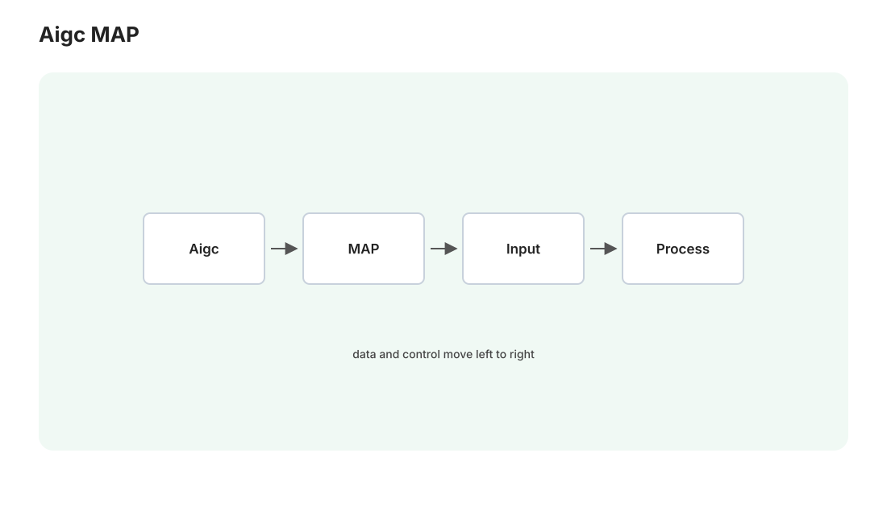

第 16 讲 · AIGC 全景地图：一个框架看懂所有模态
拓展篇开篇。图像之外，视频、语音、音乐、3D 都在爆发——工具名字每月翻新，但造它们的配方惊人地统一。本讲先给你一个"四步框架"，用它把所有模态一次性看穿；再给全景对照表和"你的两台机器怎么分工"。有了这张地图，后面五讲（以及未来任何新模态发布会）都只是在填表格。
时效声明
本篇涉及的具体模型以 2026 年初为快照（迭代以月计，视频领域以周计）；框架与判断方法长期有效。动手前照例花五分钟核对社区最新主流。

1. 四步框架：一切 AIGC 的统一配方
回看本课程前 15 讲 + 姊妹课程，每个成功的生成系统都由四步构成：
① 找一个紧凑表示：原始数据太大（4K 视频每秒几亿像素、每秒音频 4.4 万个采样点），先训练一个"压缩器"把它变小——图像用 VAE（第 04 讲，8× 空间压缩），视频用 3D VAE（再压时间维，第 17 讲），音频用神经编解码器（把波形变成离散 token，第 19 讲的 RVQ）。表示的质量决定整条管线的上限——这是各家最下本钱的隐形战场。
② 在表示上选生成范式：主流就两条（都在本课程推导过）——
| 自回归（AR） | 扩散 / 流匹配 | |
|---|---|---|
| 机制 | 逐 token 预测下一个（姊妹课程 07 讲） | 整块并行去噪（本课程 02–03 讲） |
| 表示要求 | 离散 token | 连续张量 |
| 长度 | 天然变长、可流式输出 | 固定块，长了要拼接 |
| 强项 | 长程结构、与 LLM 融合 | 高保真细节、可控性 |
| 各模态站队 | 文本、语音(VALL-E 系)、音乐(MusicGen) | 图像、视频、音乐(新一代)、3D |
有趣的规律：时间结构强的模态（语言、语音、音乐）AR 有天然优势；空间细节重的模态（图像、视频画质）扩散占优——而 2025 年以来的趋势是两者杂交（AR 骨架 + 扩散补细节）。
③ 注入条件：文字（经文本编码器 + cross-attention，第 04 讲）、参考图/音（经对应编码器，第 05 讲 IP-Adapter 的思想在每个模态都有分身）、结构信号（ControlNet 思想同样跨模态繁殖：视频的姿态控制、音乐的旋律控制）。
④ 解码回放：表示解回原始模态——VAE Decoder、音频声码器（vocoder）、3D 的网格提取。往往还挂后处理链（放大、插帧、修复——第 14 讲的思想跨模态平移）。
用法：以后见到任何新模型发布（"XX 一句话生成 3D 世界"），按四问拆解：表示是什么？范式是哪个？吃什么条件？解码成什么？拆完它就不神秘了。这是本讲最值钱的一段话。
2. 全景对照表（2026 初快照）
| 模态 | 表示 | 主流范式 | 闭源标杆 | 开源本地可跑 | 你的 16GB 可行性 |
|---|---|---|---|---|---|
| 文本 | BPE token | AR | GPT/Claude/Gemini | Qwen、DeepSeek 蒸馏版 | ✅（姊妹课程 11 讲 ollama） |
| 图像 | 2D 潜空间 | 扩散/流匹配 | GPT Image、MJ | SDXL/FLUX/Qwen-Image | ✅ 本课程主体 |
| 视频 | 3D 时空潜空间 | 扩散 DiT | Sora 2、Veo 3、可灵 | Wan 2.x、HunyuanVideo 1.5、LTX | ✅ 量化后可跑（第 18 讲） |
| 语音 | 神经 codec token / mel | AR-codec 与流匹配并立 | ElevenLabs、豆包语音 | GPT-SoVITS、F5-TTS、CosyVoice | ✅ 轻松（第 19 讲） |
| 音乐 | codec token / 音频潜空间 | AR → 扩散 DiT | Suno、Udio | ACE-Step、Stable Audio Open | ✅（第 20 讲，ComfyUI 原生） |
| 3D | 多视图 / 隐式场 / 网格 latent | 扩散两段式 | Tripo、Rodin | Hunyuan3D 2.x、TRELLIS | ✅ 中小模型（第 21 讲） |
| 数字人 | 视频 + 关键点/音频驱动 | 混合 | HeyGen 等 | LivePortrait、LatentSync | ✅（第 21 讲） |
| 4D/世界模型 | 时空场 | 探索期 | Genie 3 类 | 尚无成熟本地方案 | ⏳ 观望 |
三个跨行观察：
- 视频是当前的主战场（资本与算力密度最高）——原理上它就是"图像 + 时间维"，你前 15 讲的知识直接复用八成（第 17 讲）；
- 开源滞后闭源约 6–18 个月，但"够用线"已被普遍越过——本地方案的价值不在打平标杆，而在免费、可控、可组合进你自己的管线（与姊妹课程第 10 讲的判断框架同源）；
- ComfyUI 正在成为多模态的通用宿主：视频、音乐、3D 的开源主流模型都已原生进驻（我在你的 0.22 节点表里逐一核实过：Wan/LTX/HunyuanVideo/ACE-Step/Stable Audio/Hunyuan3D 全在）——你已经学会的节点思维和排障方法，一分钱不浪费地平移到所有新模态。
3. 商业服务 vs 本地部署：判断框架
每个模态都会面临"用 Suno 还是本地 ACE-Step"式的选择，判断维度固定：
- 质量上限要求高、单件产出（婚礼视频、正式发布的歌）→ 商业服务；
- 量大、要迭代、要组合（素材库、批量试错、嵌进自动化管线）→ 本地；
- 隐私/版权敏感（自己的声音克隆、未发布素材）→ 只能本地；
- 学原理→ 必须本地（黑盒学不到东西——这门课本身就是证明）。
4. 你的算力地图：两台机器怎么分工
| Win（4060 Ti 16GB + 32GB RAM） | Mac（M4 24GB 统一内存） | |
|---|---|---|
| 角色 | 重活主力：视频、音乐、3D、TTS 训练/推理 | 编排与轻活：脚本、预处理、MLX 轻量模型 |
| 优势 | CUDA 生态全兼容（AIGC 开源工具链默认 CUDA） | 常开、大统一内存、你的开发主场 |
| 本篇用法 | ComfyUI 视频/音乐工作流、独立 TTS 服务 | 远程投递任务（第 15 讲 API 桥）、素材整理 |
一条经验规则：开源 AIGC 工具优先装 Win——绝大多数项目按 CUDA 开发，Mac 支持是二等公民（能跑但慢/坑多）。Mac 的角色是"指挥部"，这个格局你在 Medusa 里已经很熟了。
5. 拓展篇路线图
- 17–18 视频：原理（时空扩散）→ 实战（Wan/LTX/HunyuanVideo 上你的机器，含显存策略与模板）；
- 19 语音：TTS 三代范式、声音克隆、本地工具选型与部署；
- 20 音乐与音效：从 MusicGen 到 ACE-Step，ComfyUI 里直接出歌；
- 21 3D、数字人与流水线收束：image-to-3D、口型同步，最后把全篇串成一条"角色图 → 动画 → 配音 → 口型 → 配乐"的全本地短片管线——你 VRChat 素材的终极玩法。
先从主战场开打：视频。一段 5 秒 720p 视频是 100+ 张连贯的图——"连贯"两个字，值一整讲的数学。